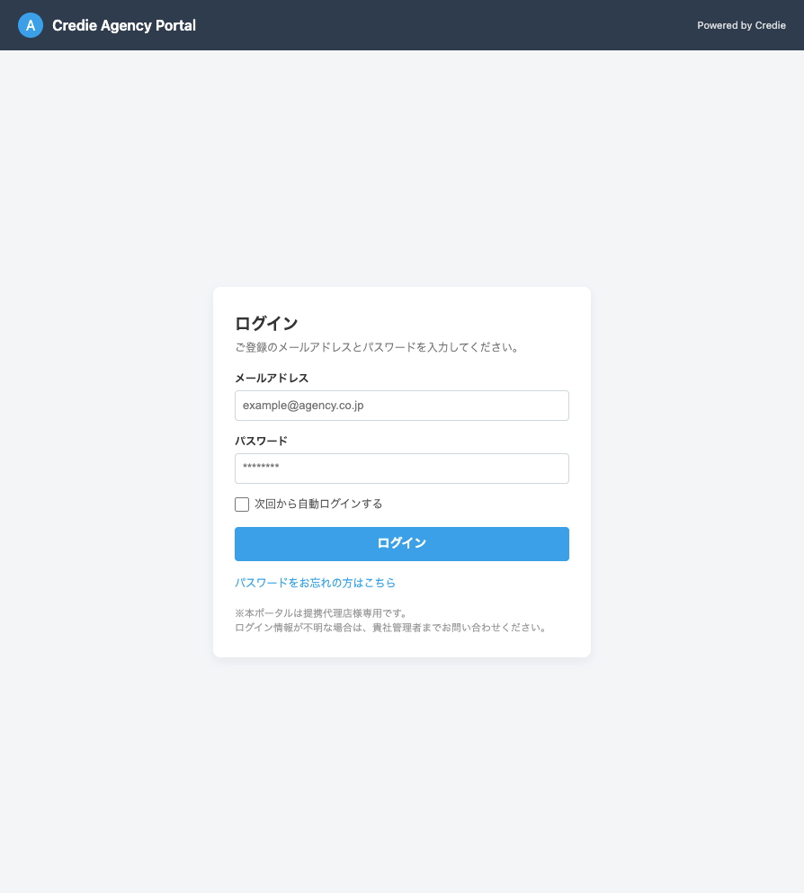
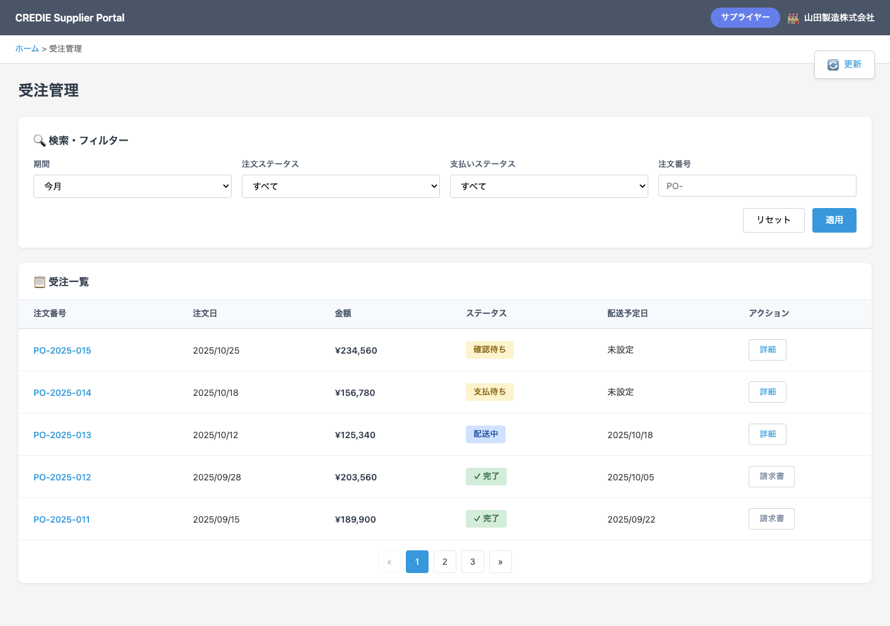
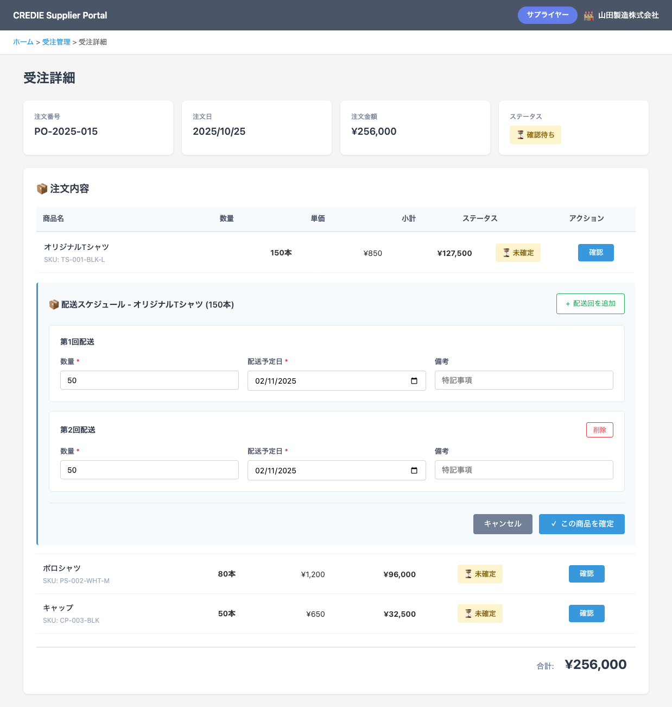

次回から自動ログインするメールアドレスまたはパスワードが正しくありません。このアカウントは現在ご利用いただけません。管理者までお問い合わせください。今月すべてすべてPO-リセット：全条件を初期値（今月 / すべて / 空）に戻す。適用：現在の条件で一覧を再検索。更新 ボタンで一覧をリロード（フィルター条件は維持）。PO-2025-015）未設定）« 1 2 3 » のページネーションを表示。PO-2025-015）配送スケジュール - オリジナルTシャツ（150本）未設定 とする。スケジュール確定 または同等の名称に変更。
UIイメージ：

CREDIE Supplier Portal タイトル、ロールバッジ「サプライヤー」、会社名。ホーム > 受注管理
UIイメージ：

ホーム > 受注管理 > 受注詳細合計：¥256,000）を表示。
UIイメージ：
